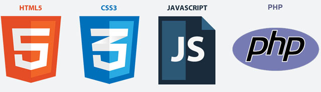

HTML/ CSS/JavaScript/PHP
Pembangunan laman web
Julai 2015 / Syawal 1435
Pengenalan
Aku Tanya Apa Khabar
- Pembangunan web secara umum
- Pengenalan kepada PHP
- PHP + HTML + CSS + JavaScript + Pangkalan Data
- Beberapa isu-isu yang saling berkaitan
Senario Masa Kini

- Membangun / Mengemas kini laman web mudah / dungu...
- ... atau sistem aplikasi web - bentuk, pangkalan data
- ... atau aplikasi berbilang platform - mudah alih
- ... atau web services - back-end RESTful app, API
CABARAN
- Reka bentuk yang betul dan berkesan
- Pelbagai citarasa bahasa / teknologi
- Pengekodan dari awal vs Rangka Kerja vs Penyelesaian Pakej
- Berbilang platform - reka bentuk responsif / penyesuaian
- Kitaran pembangunan / saiz pasukan
- Isu-isu lain - Keselamatan, SEO, Perkongsian Sosial

DARI SIFAR TO ADIWIRA
- Seni Bina Pelanggan-Pelayan
- Pengaturcaraan (Berorientasikan Objek)
- Pangkalan Data - mereka bentuk, menulis SQL
- Kemahiran menggunakan alat yang tepat -
termasuk Google, Youtube, Stackoverflow - Amalan pembangunan umum -
Subversion, Git, Mercurial - Sikap yang betul
Aplikasi yang berkaitan dengan PHP
Antara penggunaan PHP masa kini
- Aplikasi berasaskan Rangkakerja
- Penyelesaian Aplikasi Sedia Ada / Packaged solutions
- Berbilang Platform / Multiplatform
Aplikasi berasaskan Rangkakerja
- Sering menggunakan pendekatan MVC
- M - Model, V - View, C - Control
- Abstraksi vanila PHP
Penyelesaian Aplikasi Sedia Ada
- Sistem Pengurusan Kandungan Web- Joomla, Drupal
- Blogging - Wordpress, Blogger
- E-dagang - Opencart, Prestashop
- Misc - [phpBB, SMF], [Mediawiki], [Moodle]
Berbilang Platform
- Mobile/Device - via JS frameworks - jQuery Mobile, Sencha Touch
- PhoneGap - native function
Menjana HTML
HTML
- HyperText Markup Language
- Struktur dan kandungan
- Standard dan user-defined tags (HTML)
ELEMEN KANDUNGAN
- Headings dan paragraphs
- Lists - ordered dan unordered
- Jadual / Tables
- Borang / Forms - input, combo, radio, buttons
Struktur Tags
- Head dan body
- Div dan span
- section, header, footer, nav, article (HTML)
Bergaya dengan CSS
Lembaran CSS - CASCADING STYLE SHEET
- CSS - pendekatan modular
- Styling tipografi, susun atur(layout), unsur-unsur(elements), animasi, 3D
- LESS dan Mixins
Bergaya dalam halaman
- Susun atur struktur menggunakan divs
- Skim warna - Kuler, Color Scheme Designer
CSS Frameworks
- Sering ditambah dengan perpustakaan JavaScript (lihat seksyen seterusnya)
- Twitter Bootstrap, YAML, YUI
- Reka bentuk responsif - peranti pertama
- Sistem grid bagi susun atur tetap dan cecair
JavaScript
Perkara yang boleh dilakukan dalam JavaScript
- Perpustakaan JavaScript - jQuery, Prototype
- Interaktiviti - animasi, kesan visual
- Fungsi / Functional - widgets, ui elements
- 3D
- Data - AJAX, JSON
jQuery dan Firebug
- jQuery, jQuery UI, jQuery Mobile
- Firebug extension untuk Firefox
Pemasangan PHP
Perisian (atas Windows)
- Pelayan web - FTP
- Memasang Apache, PHP, MySQL ...
- ... atau WAMP susunan - Xampp, AppServ, WampServer
- dan kod menggunakan IDE (Dreamweaver, Eclipse) ...
- ... atau teks-editor (Notepad ++, Teks Sublime)
Vanilla PHP
- Kefahaman <?php ... ?>
- Menulis - Apa Khabar Dunia!
- Mengunakan $variables
- Dengan memanfaatkan struktur kawalan
- Manipulasi tatasusunan[], fungsi/function ()'s
Fragments
Hit the next arrow...
... to step through ...
... a fragmented slide.
Fragment Styles
There's different types of fragments, like:
grow
shrink
fade-out
current-visible
highlight-red
highlight-blue
Contoh Koding
<?php
// 1. laporan tahap kesilapan kod PHP
error_reporting(E_ALL);
// 2. isytiharkan zon masa => Asia/Kuala Lumpur
date_default_timezone_set('Asia/Kuala_Lumpur');
// 3. setkan tatarajah sistem
require 'tatarajah.php';
// 5. istihar class Mulakan
$aplikasi = new Mulakan();
?>
<a href="pergimana.html">abc</a>Contoh Kod2
Reveal.addEventListener( 'customevent', function() {
console.log( '"customevent" has fired' );
} );
Mencapai Pangkalan Data
MySQL
- CRUD dengan pangkalan data
- MySQL - sumber terbuka RDBMS
- Buka pelayan pangkalan data dengan konsol/dos
- GUI - phpmyadmin, adminer,phpminiadmin, sqlyog
- Menggunakan phpmyadmin/adminer/phpminiadmin sebagai ujian
PDO - PHP Data Objects
- Sambungan PDO - antara muka ringan untuk akses pangkalan data
- Menyediakan lapisan capaian data abstraksi - fungsi yang sama untuk melakukan pertanyaan dan mengambil data
- Boleh mencapai sebarang pangkalan data yang sedia ada
Mysqli
- Sambungan Mysqli - pengganti Mysql yang lama
- Menyediakan lapisan capaian data abstraksi - fungsi yang sama untuk melakukan pertanyaan dan mengambil data
Lebih banyak fungsi dalam PHP
Fungsi dalam PHP
- Persembahan data - penomboran, menapis
- Sesi - menguruskan permohonan berbilang pengguna
- Keselamatan - PHPass, input sanitasi, mengelakkan sql Uniject / XSS
- Grafik - GD, pChart, PHPGraphLib, Libchart
- Data - AJAX, JSON
- Lain-lain sumber data / database - awan, SQLite
- Objek Berorientasikan - kelas dan objek
SUDAH HABIS DAA
- : www.amin007.org
- : al.amin007@yahoo.com
- : amin007.ledang
- : amin007_ledang
- : linkedin.com/in/amin007ledang
- : amin007
- : aminledang
- : amin800507
- : user/abdmuhaimin